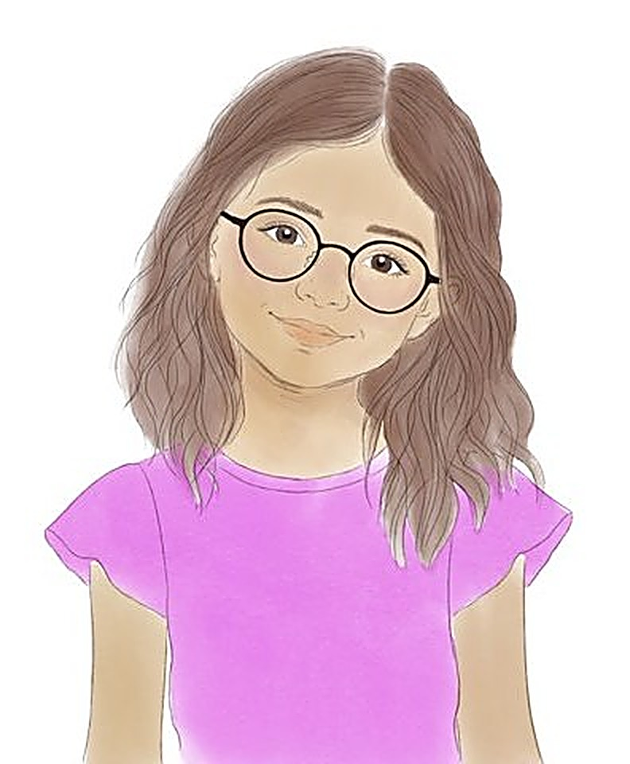
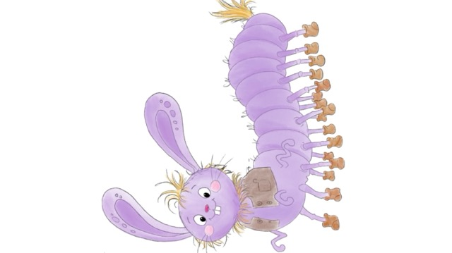
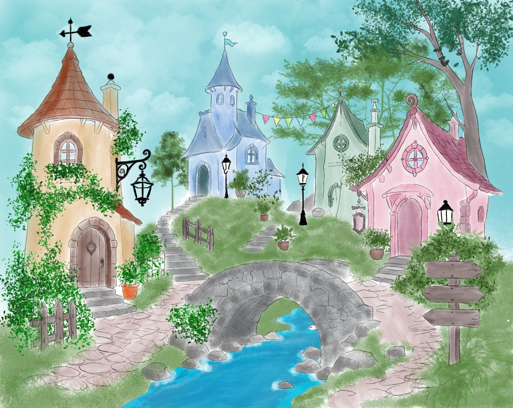
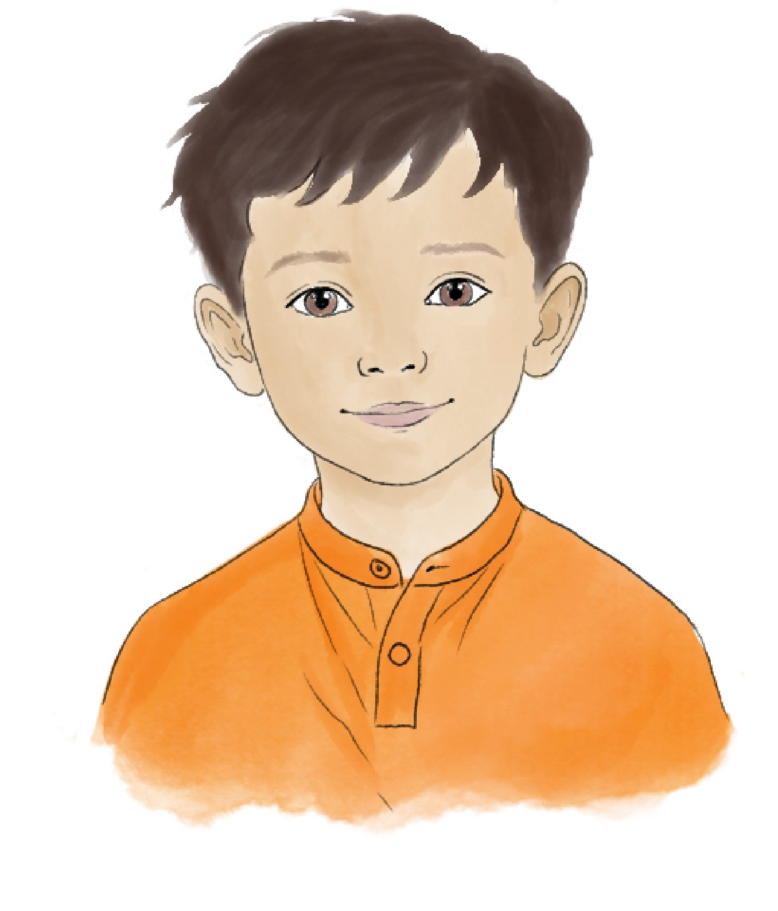
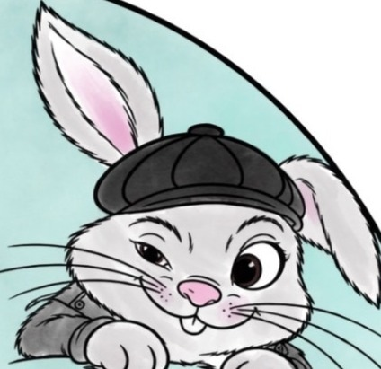
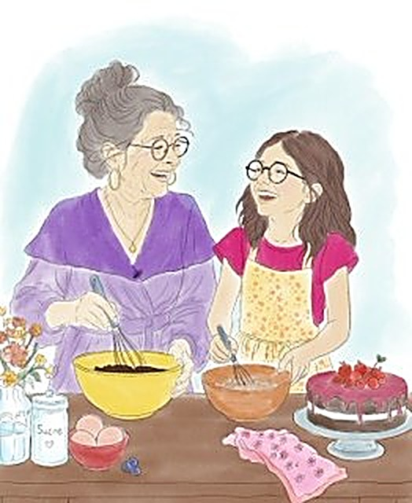
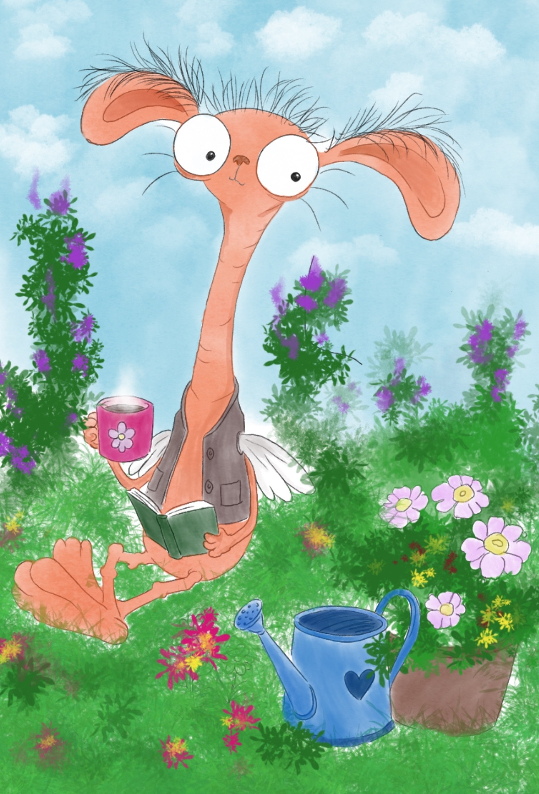

Marie
Douce et curieuse, c'est elle qui part à l'aventure dans Memoria pour aider sa grand-mère Mélisande.

✦ Spectacle pour enfants · dès 3 ans
Le village des souvenirs perdus
Et si une vieille boîte à musique renfermait tous les souvenirs d'une vie ?
Marie et Jules découvrent une mystérieuse boîte à musique ayant appartenu à Mélisande, la grand-mère de Marie. Elle ouvre les portes de Memoria, un monde entièrement bâti à partir des souvenirs de Mélisande. Mais Memoria est en danger : les maisons se fissurent et les souvenirs s'effacent. Une aventure musicale et poétique sur l'amour sous toutes ses formes.
L'univers
Mémoria raconte l'histoire d'un étrange village, Memoria, composé de maisons toutes différentes. Chacune renferme un souvenir de Mélisande : un petit morceau de son histoire, de ses rencontres, de ses joies et de sa vie.
Mais Memoria est en danger : certaines maisons se fissurent, d'autres s'effondrent, et avec elles les souvenirs disparaissent peu à peu. Marie, Jules et Pompon parcourent le village pour les raviver et découvrent que la musique, les émotions et les moments partagés peuvent faire renaître ce que le temps semblait vouloir effacer.


Douce et curieuse, c'est elle qui part à l'aventure dans Memoria pour aider sa grand-mère Mélisande.

À 7 ans, Jules est espiègle et plein d'imagination — le fidèle compagnon de jeu de Marie.

Un lapin à la casquette, aussi drôle qu'imprévisible, que Marie et Jules rencontrent dans Memoria.

La grand-mère de Marie. Ses souvenirs ont donné naissance à Memoria et à son village de maisons.

Les habitants de Memoria, hauts en couleur, chacun avec son caractère et son instrument préféré.
Pourquoi venir ?
Quatre bonnes raisons de réserver vos places (et d'y repenser longtemps après).
Dans Memoria, la musique, les émotions et les moments partagés font renaître les souvenirs que le temps semblait effacer.
De 3 à 11 ans, et leurs parents. Une histoire tendre sur la mémoire et sur l'amour d'une famille, que petits et grands suivent chacun à leur manière.
Marie et Pompon, le lapin farfelu de Memoria, forment un duo qu'on n'oublie pas.
Celui d'une famille, d'un grand amour, d'une amitié, et de tous ces petits liens qui traversent une vie et continuent d'exister au-delà des souvenirs.
Actualités
Dates de tournée, coulisses, presse : suivez la vie du spectacle.